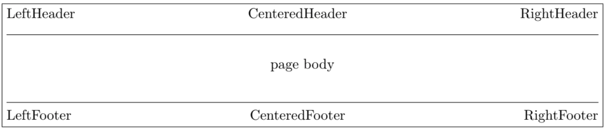
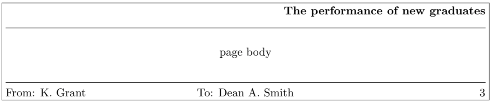

- three-part headers and footers
- decorative lines in headers and footers
- headers and footers wider than the width of the text
- multi-line headers and footers
- separate headers and footers for even and odd pages
- different headers and footers for chapter pages
- different headers and footer on pages with floats
fancyhdr
What is the fancyhdr?
The fancyhdr macro package allows you to customize in LATEX your page headers and footers in
an easy way. You can define:
Simple use of fancyhdr
Title page and information
To use this package in a LATEX document, place the file fancyhdr.sty in a directory/folder
where TEX can find it (normally in the input directory/folder), and include in the preamble of
your document after
CODE
\documentclass{...}
the commands:
\usepackage{fancyhdr}
\pagestyle{fancy}We can visualize the page layout we can create with fancyhdr as follows:

The LeftHeader and LeftFooter are left justified; the CenteredHeader and CenteredFooter are centered; the RightHeader and RightFooter are right justified. We define each of the six “fields” and the two decorative lines separately.
Let's a pair of simple example
K. Grant is writing a report to Dean A. Smith, on “The performance of new graduates” so we want this type of layout:

where 3 is the page number. The title: The performance of new graduates is bold.
`1`
This is accomplished by these commands following
CODE
\pagestyle{fancy}
\lhead{}
\chead{}
\rhead{\textbf{The performance of new graduates}}
\lfoot{From: K. Grant}
\cfoot{To: Dean A. Smith}
\rfoot{\thepage}
\renewcommand{\headrulewidth}{0.4pt}
\renewcommand{\footrulewidth}{0.4pt}
\thepagemacro displays the current page number.
\textbfputs it in bold face.) This is now fine, except that the first page does not need all these headers and footers. To eliminate all but the centered page number, issue the command
\thispagestyle{plain}
after the \begin{document} and the \maketitlecommands. Alternatively, issue
\thispagestyle{empty}
if you do not want any headers or footers.
In fact the standard LATEX classes have the command \maketitle defined in such a way that a
\thispagestyle{plain} is automatically issued. So if you do want the fancy layout on a page
containing \maketitle you must issue a \thispagestyle{fancy} after the \maketitle.